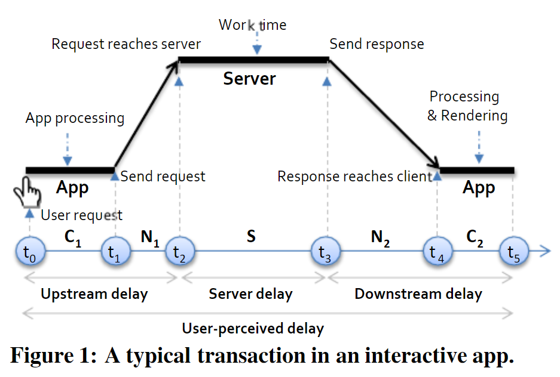
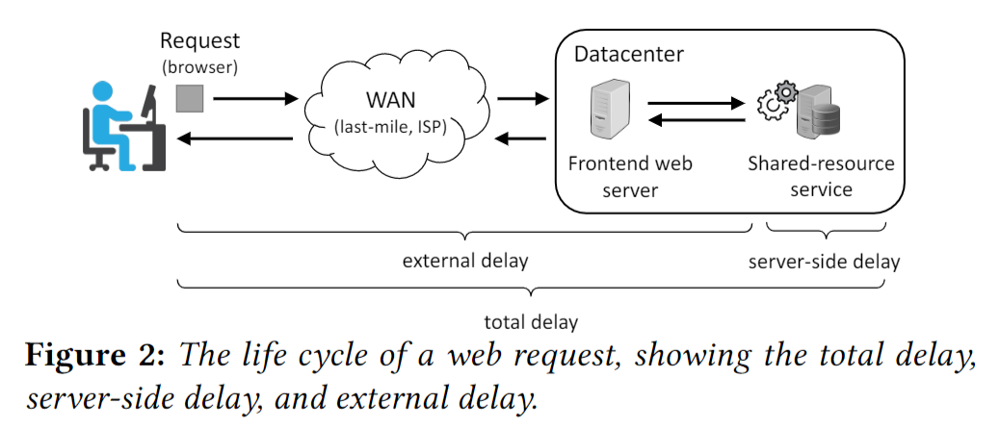
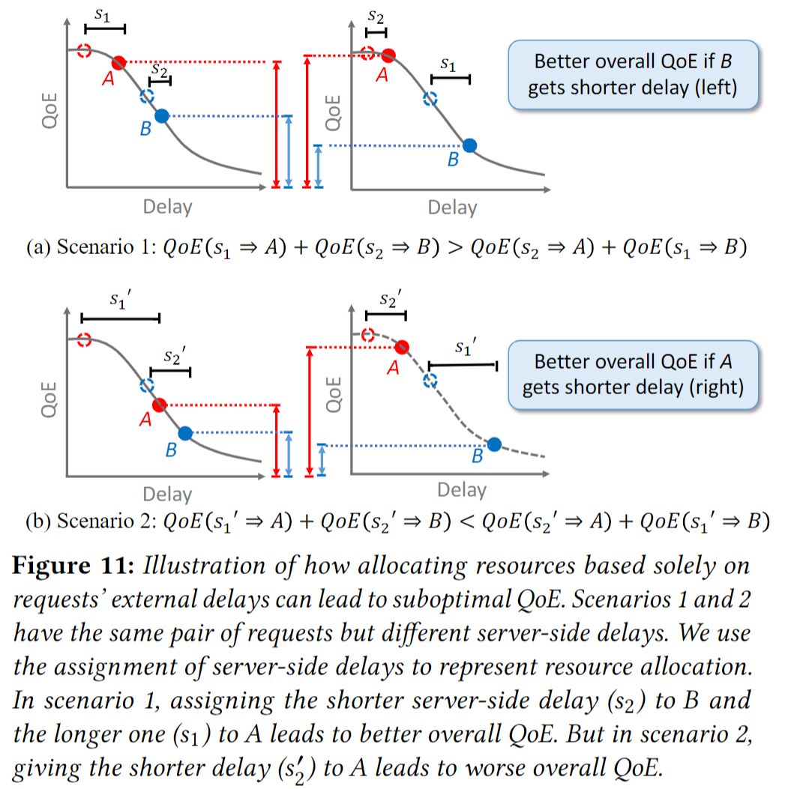

Literate Review of Related Works on NAI (Network-Application Integration)
Recently, my research interest moves to NAI (Network-Application Integration), which we think will become a hot direction of networking systems in the next few years. While it is not a totally new topic, because of emerging application service architectures (e.g., CDN, MEC, Live Video Streaming, Cloud Gaming) and networking architectures (e.g., Programmable Dataplane, SD-WAN, Segment Routing, New IP), previous works may not work very well.
To better understand new challenges on this direction, we make this literate review. For each particular existing work, we try to figure out the following questions:
- What is its design space?
- In its design, which information is required to be fed by applications?
- In its design, which information is required to be exposed by the network?
- What is its potential issues?
- If possible, how easily can it be extended to other use cases?
- Why it cannot work well in some cases?
Related Works
As a starting point, we collect related works published on CoNEXT, SOSP, NSDI, and SIGCOMM from 2007 to 2019.
The current literate review covers papers in the following list. And the list may grow in the future, if we find more highly related works.
Review Cards
Wiser
High-level Goal: design a practical interdomain routing protocol that enables ISPs to jointly control routing and compute good end-to-end paths while acting in their own interest.
$$\text{cost}_I = \min_{paths} (\sum_{p \in paths} \text{traffic}_I(p) \times \text{intcost}_I(p))$$
| Symbol | Description |
|---|---|
| $I$ | An ISP |
| $paths$ | All possible end-to-end paths |
| $\text{cost}_I$ | Expected external cost for ISP $I$ |
| $\text{traffic}_I(p)$ | The rate of traffic carried along path $p$ over some period |
| $\text{intcost}_I(p)$ | The internal cost of path $p$ in ISP $I$ |
Basic Idea: Each ISP estimate its own external cost and advertise to its neighbors the total cost to reach the destination. And each router selects the lowest cost path.
Potential Extension to NAI: For ISPs serving their own CDN, those ISPs can compute their own internal cost based on their CDN loads.
Limitation: Lowest-cost routing per destination may lead to congestion.
Path Verification Mechanism (PVM)
Cooperative IP Transit (CIPT)
Timecard

E2E


Jingxuan (Jensen) Zhang
Ph.D. Candidate & Visiting Researcher in Computer Science
My research interests include computer networking system, data analytics system and machine learning.